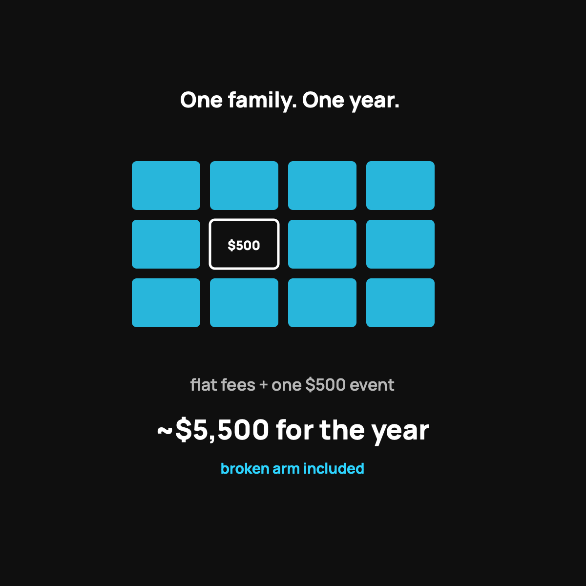

A Healthy Family's Year on Health Sharing
Twelve real months for a family of four, broken arm and all.
A full year on CrowdHealth for a healthy family of four: $240 a month in advocacy fees plus a modest crowd contribution, call it about $400 a month or roughly $4,800 a year. Add $500 for one health event (a kid's broken arm) and a few hundred in cash-pay checkups and cheap generics. Around $5,500 to $6,000 for the year, broken arm included.

Let's do something concrete. Instead of talking about health sharing in the abstract, let me walk you through a whole year for a normal, healthy family of four, with real numbers, including the bumps. This is basically how a year looks for my own family, and seeing the full twelve months laid out is what made the math finally click for me.
The cast
Say it's two parents and two kids, all generally healthy. No serious ongoing conditions. The usual stuff happens: checkups, a couple of sick visits, one kid does something dumb on a trampoline. A normal year.
They're on CrowdHealth, the service I use, so their numbers are simple: $60 per person per month, plus a modest monthly contribution to the crowd.
The steady monthly cost
Four people at $60 each is $240 a month in advocacy fees. Add the monthly crowd contribution, which moves around a bit but stays modest, and call the all-in monthly number somewhere in the low-to-mid hundreds for the family. Let's use a round, honest estimate of about $400 a month all in.
Over twelve months, that's roughly $4,800 for the year in regular costs. Hold that number.
The bumps during the year
Now the real life part:
- Routine checkups and a few sick visits. Paid at the cash price, which for a normal office visit is often very reasonable. Call it a few hundred dollars across the year.
- The trampoline incident. One kid breaks an arm. That's a health event. The family pays their $500 member commitment, the advocate negotiates the bill down, and the community shares the rest of the eligible cost.
- Cheap generic prescriptions for the sick visits. A handful of dollars each at the cash price.
So the "something happened" part of the year cost them their $500 event commitment plus a few hundred in routine cash-pay visits.
Adding it all up
Rough full-year total for this healthy family:
- Regular monthly costs: about $4,800
- The one health event: $500
- Routine cash-pay visits and cheap meds: a few hundred
Call it somewhere around $5,500 to $6,000 for the whole year, broken arm included.
Now compare that to a traditional family plan, where the premiums alone often run past that number before anyone gets sick, and you'd still owe a big deductible on top when the arm breaks. That's the gap that made me switch. I broke down the monthly math further.
The honest reminder
This is the healthy-family scenario, and that's the whole point: health sharing shines when your year looks roughly like this. A year with a serious ongoing condition, or a bill that falls outside the guidelines, would look different, because it is not insurance and there's no legal guarantee. Know which kind of year you're likely to have. Here is my who-should-skip-this post.
The takeaway
For a normal healthy family, a full year on health sharing, bumps and a broken arm included, can land thousands below what a traditional plan costs. Flat monthly fees, cash prices on the small stuff, and a $500 step when something big happens. Run your own version of this year with your real numbers, and see where you land.
Questions I get about this
How much does health sharing cost a family of four per month?
With CrowdHealth, $60 per person is $240 a month in advocacy fees, plus the monthly crowd contribution that moves around but stays modest. An honest round estimate is about $400 a month all in. Run your own numbers, because household ages change the sharing amount.
What about checkups and sick visits on health sharing?
You pay the cash price, which for a normal office visit is often very reasonable. Across a year that's a few hundred dollars for a family. CrowdHealth also crowdfunds one preventive visit a year per member up to $300 with the commitment waived.
How does this compare to a traditional family plan?
Family premiums alone often run past $5,500 a year before anyone gets sick, and you'd still owe a big deductible when the arm breaks. I put the two side by side for a good year and a bad one in The All-In Yearly Cost, Side by Side.
Want to map out your family's year? Use my code NORMAL: check CrowdHealth (opens in a new tab). New members get their first 3 months at $99 a month with code NORMAL.
My family of four uses CrowdHealth and I really believe in the model. If you join through my discount link (opens in a new tab) (code NORMAL), you get your first 3 months at $99 a month, and Normaltown USA earns a referral bonus if you stick around. It costs you nothing extra, and I only refer you to things I would tell a friend about. Health sharing is not insurance, and nothing here is medical, tax, or financial advice.

Written by David Dewese
Normal guy with a full-time job, wife, and kids. Spent twenty years pursuing music and creative ventures before starting a family. Sharing tips and tricks on how to thrive while living on an artist's income. Not a financial advisor. More about me.
New here?
Normaltown USA is plain-English money and healthcare help for normal people, written by a regular guy with a family of four. No jargon, no hype. Start here, or read the FAQ.